研究
身体・材料・環境の相互作用を通じて、生物の適応性と自律性を理解し、新しいロボット技術を探究します。研究プロジェクト、これまでの成果、モデルや実験データを紹介します。
研究記録・アーカイブの詳細は英語原文で掲載しています。
研究概要
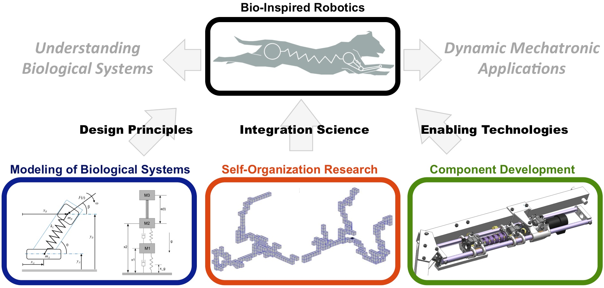
本研究室は、ロボティクスと生物学の接点に位置する研究に取り組んでいます。生物システムの設計原理を抽出し、動的なメカトロニクスシステムの設計と制御、生物に学ぶセンサー・アクチュエーター技術、計算による最適化手法を研究の基盤として発展させています。動的なロボットの研究を通じて動物の適応性と自律性への理解を深めるとともに、適応性、運動性能、損傷への強さ、エネルギー効率に優れた新しいロボット応用の実現を目指しています。現在は、「生物システムのモデル化」（動物の適応行動の数理的な記述）、「自己組織化」（構造やパターンを生み出す仕組み）、「要素技術の開発」（センサー、モーター、計算アルゴリズム、組み立て技術などの新しい基盤技術）を中心に研究を進めています。
研究プロジェクト
電気インピーダンストモグラフィ（EIT）によるソフトロボットセンシング

概要：柔らかいロボットの皮膚で、触れられた場所や状態を感じ取れるでしょうか。材料の周囲に取り付けた電極から電気を流し、その伝わり方の変化から内部の状態を推定するEIT技術を研究しています。材料の設計と信号の解析を組み合わせ、触覚の感度を調整し、接触位置や複数の感覚情報を読み取るロボットスキンを目指します。
論文： Science Robotics, Scientific Reports
魚の歩行に学ぶ大規模進化の原理

概要：脚を持たない魚は、どうやって陸上を歩くのでしょうか。魚の観察、数理モデル、シミュレーション、実機ロボットを組み合わせ、身体のうねりとひれの接地が前進を生む仕組みを調べています。三点支持のモデルや、1台のモーターとらせん機構で動くロボットを通じて、単純な身体から巧みな協調運動が生まれる原理に迫ります。さらに、こうした仕組みを手がかりに、生物が進化の過程でどのように水中から陸上へ進出し、陸上での移動能力を獲得したのかを探究します。
研究者： Michael Ishida, Narges Khadem Hosseini, Fidji Berio, Theodora Po, Valentina Di Santo, Neil Shubin and Fumiya Iida
論文： Nature Communications, Bioinspiration & Biomimetics
プロジェクト： Walking Fish Robots
物理リザバー計算によるロボット制御
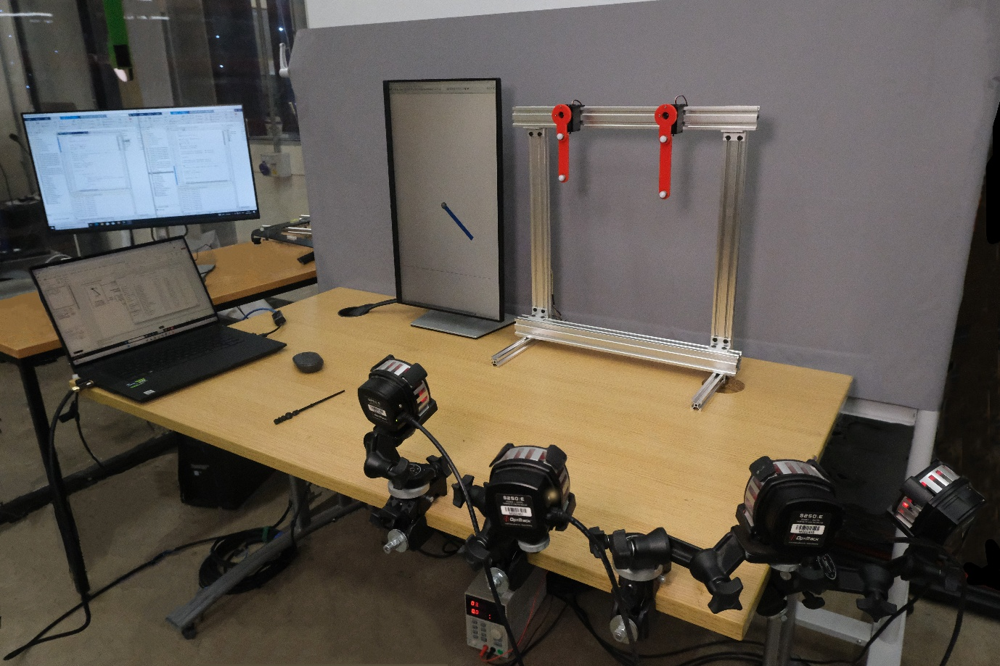
概要：身体の揺れや群れの動きそのものが、計算の役割を担えるでしょうか。リザバーコンピューティングでは、動的なシステムに入力を与え、その応答から必要な出力を学習して読み取ります。少量のデータでのロボット制御や、ロボットと計算を担う系の動く速さの関係を調べ、物理的な動きと情報処理を結び付けます。
論文： Communications Engineering, IROS 2025, Neural Networks
食品を扱うヒューマノイドロボット
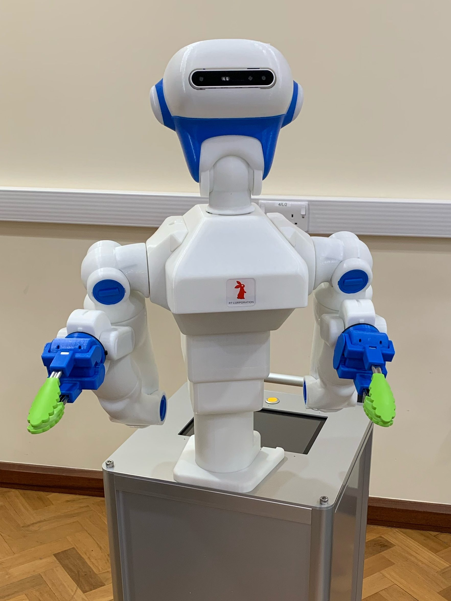
形や状態がそろわない食品を扱うことは、ロボットにとって難しい課題です。Foodlyは、コンピュータービジョンと深層学習を活用する食品作業用ロボットです。飲食店や食品加工の現場を対象に、従来の産業用ロボットでは対応しにくい状況に適応し、多様な食品を扱う方法を探究しています。
ロボット科学者：紙片の落下実験
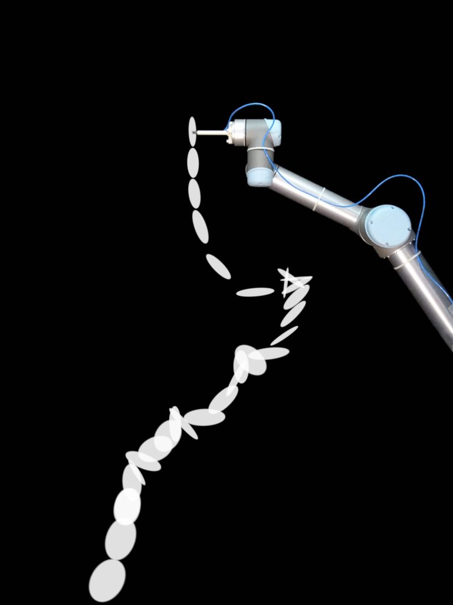
概要：ひらひらと落ちる紙の動きには、どのような規則が隠れているのでしょうか。紙を落とす実験をロボットが繰り返し、大量の観察データを集めるシステムを開発しています。身近でありながら予測の難しい現象を題材に、ロボットが科学実験を支える可能性を探ります。
Researchers: Toby Howison, Josie Hughes, Simon Hauser
Publication: PLoS ONE, Nature Machine Intelligence
Video: Falling Papers, Experiments
農業・食品ロボティクス

概要：形も育ち方も異なる農作物を、ロボットはどう扱えばよいのでしょうか。農業・食品分野の作業を対象に、ロボット技術の活用を研究しています。人にとって単調な作業や身体への負担が大きい作業に着目し、変化の多い現場で働けるロボットを目指します。
Researchers: Simon Birrell, Josie Hughes, Luca Scimeca
Publications: JFR, RAL
Video: Vegebot1, Vegebot2, LeafPeeling
人の手に学ぶロボットハンド
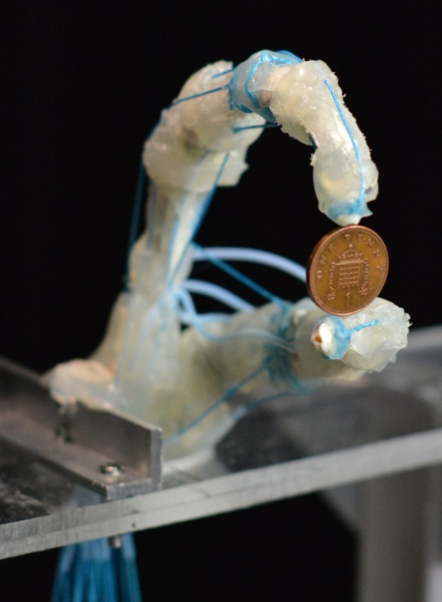
概要：人の手の器用さは、指を動かす制御だけで生まれるのでしょうか。筋肉や骨格に学んだロボットハンドをつくり、身体の構造が物を扱う能力にどう関わるかを調べています。人の手の仕組みを理解しながら、柔軟で器用なロボットハンドの設計と制御につなげます。
Researchers: Utku Culha, Josie Hughes, Kieran Gilday
Publications: BioBio, Science Robotics
Video: UtkuHand, PianoHand1, PianoHand2
ソフトロボットのセンシング
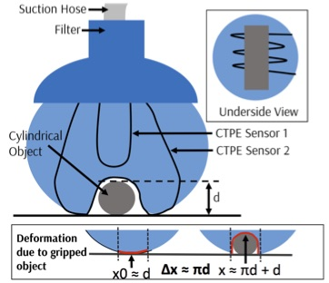
概要：柔らかいロボットは自在に変形できますが、自分がどのような形になったかを知ることが難しくなります。機能性材料とその加工・実装方法を研究し、大きく変形する身体の状態を読み取る技術を探究しています。柔らかさを保ちながら動きを把握することで、より確かな制御を目指します。
Researchers: Utku Culha, Surya Nurzaman, Josie Hughes, Thomas George Thuruthel
Publications:SoRo, Sensors, PLoS One
Video: SVAS3, SensorisedUniversalGripper, AdaptiveSensorMorphology
これまでの研究プロジェクト
ロボットの物理的進化
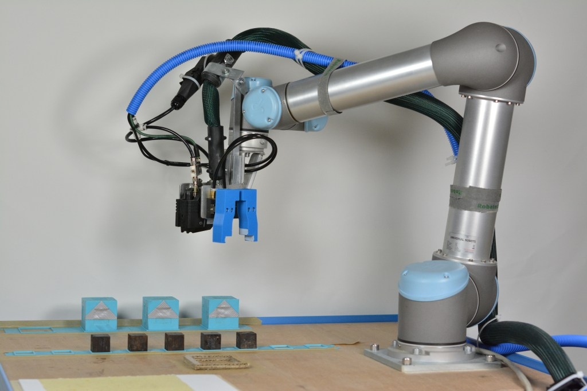
概要：ロボットが自分の身体をつくり変えられたら、どのような適応が可能になるでしょうか。生物の成長や進化に着想を得て、ロボットの身体を自律的に設計・製作する技術を研究しています。複雑な課題や環境に合わせて身体そのものを変え、機能を高める可能性を探ります。
Researchers: Luzius Brodbeck, Liyu Wang, Vuk Vujovic, Andre Rosendo, Toby Howison
Publications:PLoS One, ALife, RoySocInterface
Video: RobotInventor, RobotInventor2, EvoDevoExperiments, ToolBuildingAndUse
アマゾン・ロボティクス・チャレンジ：CambridgeARMプロジェクト
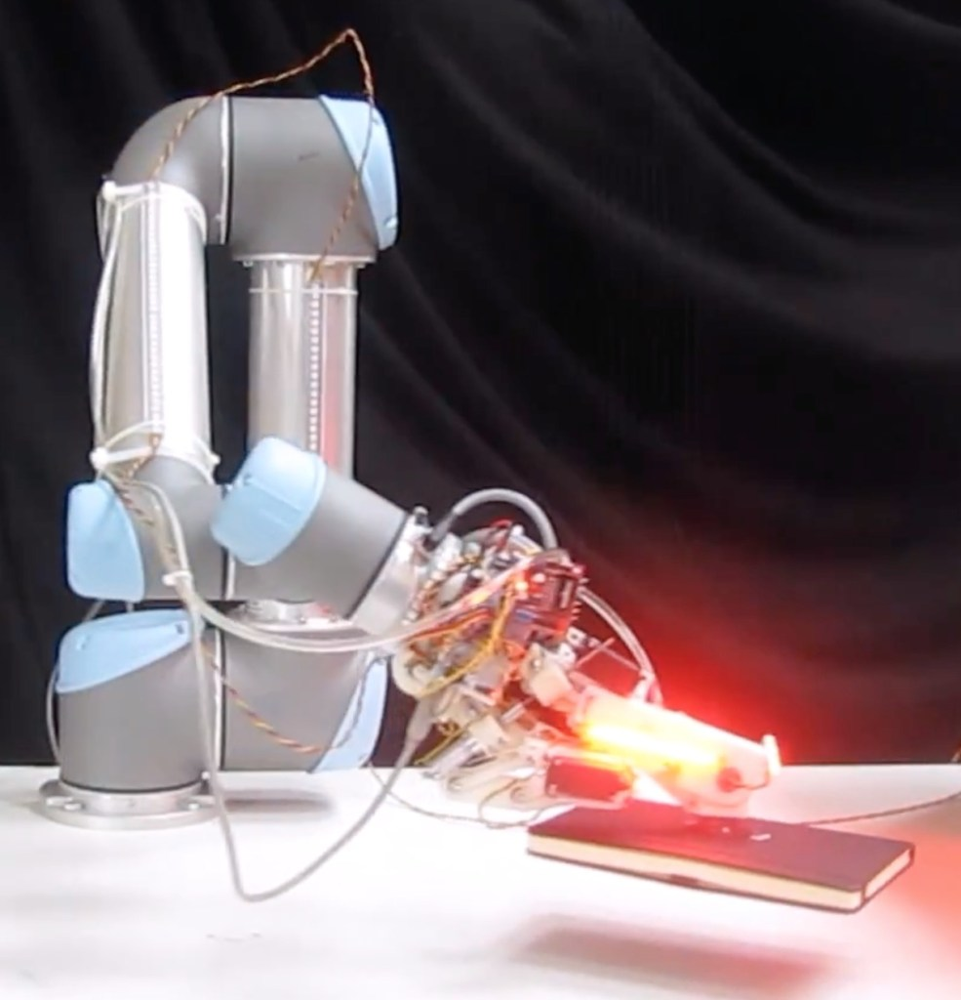
形の異なる品物が並ぶ棚から、目当ての物を見つけてつかみ、箱へ移す。この一連の作業をロボットに任せるため、Amazon Robotics Challengeへの参加を通じて、品物を見分ける視覚システム、つかむ位置の判断、機敏なマニピュレーターを研究しています。詳しくはこちらをご覧ください。
熱可塑性接着剤でつくるロボット
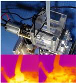
概要：接着剤は、ロボットの身体や道具をつくる材料にもなります。熱で軟らかくなるホットグルーを用い、柔軟な構造や硬い構造を形成したり、部品を強く接合したりする技術を研究しています。入手しやすい材料から、ロボットが成長し、形を変えるための仕組みを探究します。
Researchers: Liyu Wang, Luzius Brodbeck, Derek Leach, Utku Culha, Surya G. Nurzaman, Keith Gunura
Publications:IROS 2013, IEEE/ASME-TMECH, BioRob 2012, ICRA 2012, IROS 2012, PLOS ONE
Media coverage:Daily Mail, NBC News, Popular Science, New Scientist, RSI Channel, IEEE Spectrum, ETH Globe Magazine
Videos: SpiderRobot, SoftRobotGluing
自己組織化による反射行動の形成
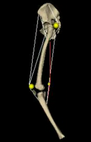
概要：反射のような動きは、一つずつプログラムしなくても生まれるでしょうか。シミュレーション上の脚モデルで、相互作用から秩序が生まれる「自己組織化」の原理を研究しています。同じ原理から、伸張反射、逆伸張反射、相反抑制、逃避反射に相当する応答が得られ、身体と神経系の協調が形成される仕組みを探る手掛かりになります。
Researchers:Hugo Gravato Marques
Publications:Current Biology, Biological Cybernetics
Videos:Reflex Learning and Jumping
クラッチを活用した新しい駆動機構
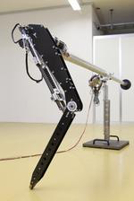
概要：脚の硬さや動きの抑え方を切り替えると、ロボットの動きはどう変わるでしょうか。ばね、ブレーキ、クラッチを組み合わせ、軽量で力強く、構造が単純な駆動機構を開発しています。炭素繊維やガラス繊維などの材料も活用し、状況に応じた動きと効率のよい移動を目指します。
Researchers:Fabian Günther, Derek Leach
Publications: IROS 2013, IEEE/ASME-TMECH, IROS 2012, IROS 2012, AMAM 2011
Videos:Preloaded Hopping with ETHop and LMMA, Open loop Hopping with ETHop, Double Pendulum
並列弾性機構による世界最高効率ロコモーション
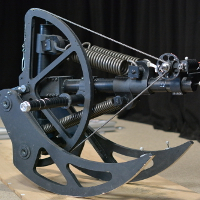
概要：ばねに蓄えたエネルギーを次の一歩に使えば、移動に必要なエネルギーを減らせるでしょうか。弾性を持つ曲がりばりの振動を利用し、跳躍・歩行・走行を生み出すロボットを研究しています。構造の設計と運動の関係を実験やシミュレーションで調べ、エネルギーを有効に使う制御につなげます。
Researchers:Xiaoxiang Yu, Fabian Günther, Surya Nurzaman
Publications:TMECH, ALife, TIE, ICRA 2013, IROS 2012, AIM 2012, AIM 2011, AMC 2012, AMAM 2013, Dynamic Walking 2012, ICMC 2011
Videos: Cargo, Kanga, Quad
身体を支える姿勢支援装置
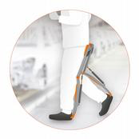
複雑な壁面で荷物を運ぶ登攀ロボット
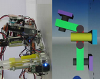
概要：大きな凹凸がある壁を、荷物を運びながら登るにはどうすればよいでしょうか。熱可塑性接着剤を使い、接触面の形になじませて足場をつくる登攀技術を研究しています。熱による接合の強さと材料の変形しやすさを組み合わせ、複雑な垂直面での移動に挑みます。
Researchers:Liyu Wang
BSc and MSc students: Lina Graber, Remo Bernet, Fabian Neuschaffer, Marc Osswald
Publications:IEEE-TRO, RAS, IROS 2011, ICRA 2012, IROS 2012;
Media coverage:New Scientist, UPI News, Discovery Channel, Focus Magazine, IEEE Spectrum
Videos:A flat surface, complex environments, a large payload
MR ESS：エネルギー自立を目指すロボット
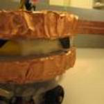
概要：直接測れない状態を、ロボットはどのように推測できるでしょうか。現実の身体の動きと、内部で行う「メンタルシミュレーション」を結び付ける計算手法を研究しています。測定できる情報から見えない状態を推定し、不確実な環境に適応するための仕組みを探ります。
Researchers:Liyu Wang,
BSc and MSc students: Kevin Frey, Rohit Vaish, Cristian Montillo
Media coverage:NZZ Campus Magazine
Videos:Q Learning
コンパス型二足歩行ロボットの不整地歩行
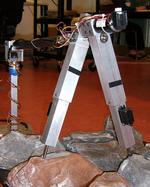
概要：単純な二本の脚で、段差や隙間を越えられるでしょうか。コンパスのような構造を持つ二足歩行ロボットを使い、連続する障害を越えて歩く制御を研究しています。身体の自然な動きを生かしながら、不整地で歩行を続ける仕組みを探ります。
(Massachusetts Institute of Technology, USA) Video
少ない駆動機構で動く脚ロボット
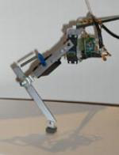
人のように歩く二足歩行ロボット
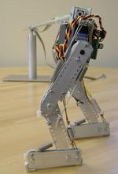
身体の動きを利用したセンシング
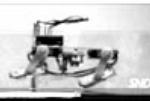
最小限の制御と駆動による水中移動
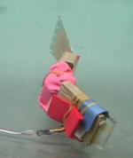
Puppy：単純な仕組みで素早く走る四足ロボット
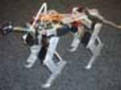
Stumpy：振り子で駆動する跳躍ロボット
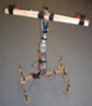
生物に学ぶ三次元視覚ナビゲーション
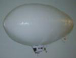
概要：ミツバチは、見えている景色をどう使って目的地へ向かうのでしょうか。動物の視野を再現する全方位視覚を用い、三次元空間で移動するための認知機能をモデル化しています。景色から移動の仕方を学ぶ仕組みを、生物とロボットの両面から探ります。
(University of Zurich, Switzerland) (Funded by the Swiss National Science Foundation, Grant No 2000-061372.00)
顔ロボットとの表情によるコミュニケーション
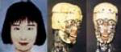
概要：言葉を使わず、表情だけで人とロボットは意思を伝え合えるでしょうか。人工筋肉でさまざまな表情をつくる顔ロボットを使い、人と機械の非言語コミュニケーションを研究しています。表情を生み出す身体の仕組みと、人とのやり取りの関係を探ります。
(Science University of Tokyo, Japan)
研究紹介・動画
“It’s still a long way to go before we’ll have robots that look, act and think like us, but what we do have are a lot of enabling technologies that will help us import some aspects of biology to the engineering world.”
Professor Fumiya iida, head of Bio-inspired robOtics laboratory
ケンブリッジ大学のBIRLでは、ロボットと人の相互作用を研究し、人には簡単でもロボットには非常に難しい作業を教えることに取り組んでいます。
本研究室では、知能の理解やロボットの移動性能の向上など、自然に学ぶことでロボティクスをどのように発展させられるかを研究しています。
同じ動作を行う場合でも、ロボットは動物の10〜100倍のエネルギーを必要とします。飯田研究室には、バッタ、人間、さらには恐竜に着想を得たものまで、多種多様な跳躍ロボットがあります。
研究グループが開発した「Chairless Chair」は、膝関節を固定することで、椅子がなくてもその場で「座る」ことができる装着型の支援装置です。
(Video and text courtesy of the University of Cambridge Press office)
欧州委員会の助成を受ける総額300万ユーロの自己修復ソフトロボット（SHERO）プロジェクトは、自己修復材料（柔軟なプラスチック）でできた次世代ロボットの開発を目指しています。損傷を検知し、一時的な自己修復に必要な処置を行い、作業を再開するまでを、人の介入なしで実行するロボットを構想しています。
ブリュッセル自由大学（VUB）が率いる研究コンソーシアムには、ケンブリッジ大学工学部、パリ市立工業物理化学高等専門大学（ESPCI）、スイス連邦材料試験研究所（Empa）、オランダのポリマーメーカーSupraPolixが参加しています。
SHEROプロジェクトの一環として、工学部の飯田史也が率いるケンブリッジ大学のチームは、自己修復材料をソフトロボットアームに組み込む研究に取り組んでいます。
(Video courtesy of and copyrighted to VUB/Brubotics)
研究リソース
シミュレーションモデル
Download
実験データ
- Falling Paper Shapes: Detection and Classification (Toby Howison)
- Falling Paper Shapes: Experimental Data (Toby Howison)
- Dishwasher Unloading: Canteen Tray Data (Isobel Voysey)
- Teaching by OpenPose demonstration: Pancake cooking (Dylan Danno)
- Gaussian Process Inference Modelling of Dynamic RobotControl for Expressive Piano Playing (Cheryn Ng, Luca Scimeca)
- Joint Entropy-based Morphology Optimization of Soft Strain Sensor Networks for Functional Robustness (Thomas Thuruthel)